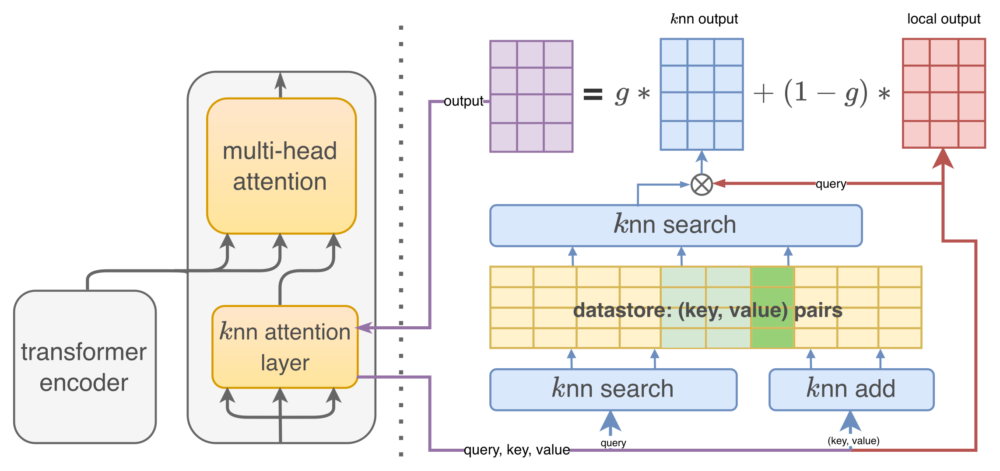

LREC-COLING 2024Speech recognition · Retrieval
Contextual Modeling for Document-level ASR Error Correction
A transcript can contain clues to its own recognition errors. Retrieving context from the document and related documents helps a correction model use those clues.
- Result
- AISHELL-1 character error rate after correction: 3.336% with offline dataset context vs 3.528% for sentence-level BART, the strongest baseline (p < 0.05).
- New vs prior
- Wang et al. (2021, 2022b) add a context encoder, and doc2doc models feed many sentences, widening attention at a length and noise cost; this work retrieves context through kNN attention.
- Limitation
- The best results need offline access to later sentences and a datastore spanning the whole test set; a live system can use only the online setting.

Correcting a transcript requires remembering what was said elsewhere
Automatic speech recognition (ASR) error correction (AEC) rewrites a recognizer's text output, and some errors cannot be fixed from one sentence. The pronouns 他 (he) and 她 (she) are both pronounced tā; in the paper's Table 1, a report names the volleyball player Zhu Ting, yet a sentence-level corrector writes 他 in the next sentence.
A longer input is the obvious fix, but attention cost grows with length and unrelated sentences add noise. The corrector instead keeps a one-sentence input and retrieves internal representations from a larger context; the recognizer itself is unchanged.
Closest prior work
Most ASR error correction (AEC) models, such as BART-based correctors (Zhao et al., 2021), work one sentence at a time. Document-level MT offers two ways to add context: a separate context encoder (sent2sent), which Wang et al. (2021, 2022b) applied to ASR correction, and multi-sentence input (doc2doc). The paper argues that both widen attention, which limits context length and adds unselected noise. kNN-MT (Khandelwal et al., 2020b) instead retrieves decoder states from a datastore built on training data; this work retrieves attention keys and values from the current document or test set.
Retrieved context helps where a longer input hurts
3.336%
AISHELL-1 CER, offline dataset context
Versus 3.528% for sentence-level BART, the strongest baseline; the difference is significant at p < 0.05 (Table 2).
3.379%
AISHELL-1 CER, online mode
With only already-corrected preceding sentences, as in a live system, the dataset-context model still improves on BART's 3.528%; on HKUST, 20.68% versus 21.36% (Table 2).
More context is not automatically better: a sliding window of neighboring sentences raises error rates above sentence-level BART on all four datasets, and a dual context encoder helps only slightly on three (Table 2). All four retrieval variants beat BART on every dataset, though by far less than BART's own reduction of the raw WeNet (Mandarin) and fairseq (English) output.
Offline beats online and dataset context beats document context, with one tie on LibriSpeech Other. Shuffling the documents or replacing retrieved entries with random vectors raises error rates, so the gain comes from the retrieved context itself (Table 5). The cost is inference time: with 16 neighbors, decoding takes 1.19× BART's time with a document store and 1.50× with a dataset store (Table 7).
Table 2 (selected columns). Character error rate (CER, Mandarin) and word error rate (WER, English) after correction, lower is better; RAW is the uncorrected output of the WeNet (Mandarin) or fairseq (English) recognizer (Appendix Table 10). * marks results significant at p < 0.05 against the BART baseline; the CERR/WERR reduction columns are omitted. Source ↗
| Method | AISHELL-1 CER↓ | HKUST CER↓ | LIB_CLEAN WER↓ | LIB_OTHER WER↓ |
|---|---|---|---|---|
| RAW | 4.312 | 27.60 | 4.553 | 9.136 |
| BART | 3.528 | 21.36 | 1.967 | 4.318 |
| Dual (sent2sent) | 3.569 | 21.10 | 1.958 | 4.304 |
| Sliding k (doc2doc) | 3.638 | 22.84 | 1.995 | 4.855 |
| Online AEC (doc) | 3.412 | 21.23 | 1.844 | 4.252 |
| Online AEC (dataset) | 3.379 | 20.68 | 1.835 | 4.245 |
| Offline AEC (doc) | 3.407 | 20.96 | 1.827 | 4.237 |
| Offline AEC (dataset) | 3.336* | 20.66* | 1.822* | 4.237* |
Method proposed in the paper
Scope. The authors build the four correction datasets from AISHELL-1 and HKUST (Mandarin, transcribed with WeNet) and LibriSpeech clean and other (English, transcribed with fairseq). The method is not tested beyond ASR correction; the paper names document-level translation as a next task. Read the study ↗
Read the abstract
Contextual information, including the sentences in the same document and in other documents of the dataset, plays a crucial role in improving the accuracy of document-level ASR Error Correction (AEC), while most previous works ignore this. In this paper, we propose a context-aware method that utilizes a k-Nearest Neighbors ( kNN) approach to enhance the AEC model by retrieving a datastore containing contextual information. We conduct experiments on two English and two Chinese datasets, and the results demonstrate that our proposed model can effectively utilize contextual information to improve document-level AEC. Furthermore, the context information from the whole dataset provides even better results.
Full paper ↗Citation BibTeX
@inproceedings{jiang-etal-2024-contextual,
title = {Contextual Modeling for Document-level ASR Error Correction},
author = {Jiang, Jin and Yin, Xunjian and Wan, Xiaojun and Peng, Wei and Li, Rongjun and Yang, Jingyuan and Zhou, Yanquan},
booktitle = {Proceedings of the 2024 Joint International Conference on Computational Linguistics, Language Resources and Evaluation (LREC-COLING 2024)},
year = {2024},
pages = {3855--3867},
url = {https://aclanthology.org/2024.lrec-main.341/}
}